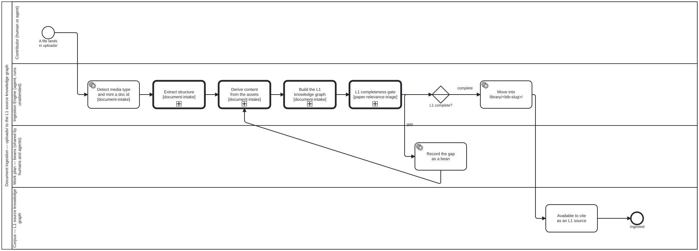
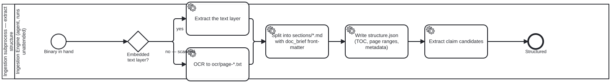
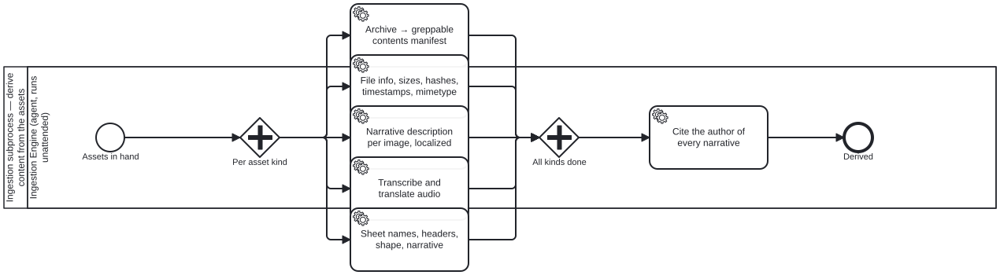
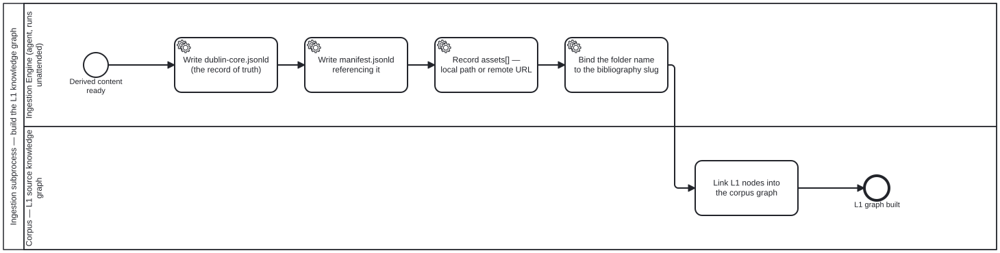
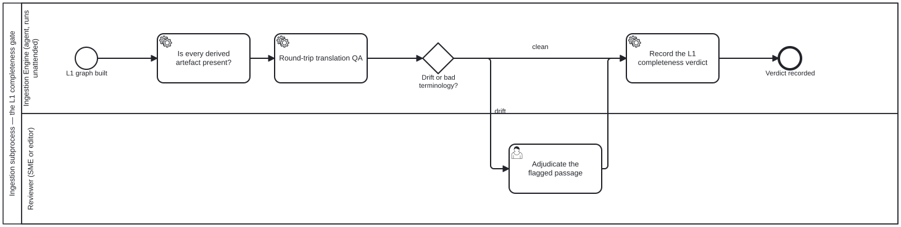

Document ingestion
On this page
This page is generated from content/docs/document-ingestion/ — each section below links to its own source.
✎ Edit ·
How a dropped file becomes an L1 source the corpus can cite — expressed as BPMN 2.0 swimlane diagrams, with the Ingestion Engine as a named actor and every not-yet-built step linked to the bean that tracks it.
uploads/ and library/ are two stages of one pipeline
✎ Edit ·
They are not the same directory under two names, and the distinction is load-bearing:
uploads/ |
library/<bib-slug>/ |
|
|---|---|---|
| what it holds | raw files as dropped | ingested, structured, described |
| stage | incoming queue | L1 source content |
| greppable by the corpus checklist | no | yes |
That last row is the one that costs sessions. The corpus-grep checklist
searches library/ only — so a paper still sitting in uploads/ does not
merely go unread, it makes a clean grep read as “nobody has done this”
while the source is sitting on disk. An un-ingested source is worse than an
absent one, because it produces false confidence rather than a gap.
library/ is L1
✎ Edit ·
Anything under library/ is L1 source content. Any knowledge-graph
reference to a source — from a paper, an L2 DAK, an L3 IG, or any other
artefact — resolves to it through library/, never to a loose path or a
bare URL.
A bibliography entry may point at a remote asset rather than a local
binary. That lives in a sibling assets[] field carrying kind / role /
url-or-path / checksum / retrieved — not inside library:, because
LibraryRef is regenerated from the tree on every sync and an authored URL
placed there is silently dropped.
The pipeline
✎ Edit ·

Four things in that diagram are worth reading closely.
The Ingestion Engine is an actor, not a script. It runs unattended. A drop during an editing session triggers ingestion in the background — the contributor does not wait for it, and nothing about the editing flow blocks on it.
The failure edge is a bean, not a log line. When the completeness gate finds
a missing derived artefact, the engine opens a bean and the document stays in
uploads/. It does not land half-ingested in library/ looking finished.
Each subprocess is its own file, called with bpmn:callActivity and
declared with bpmn:import. Open any of them on its own in bpmn.io; the parent
stays readable because it does not inline them.
The end is where authoring begins. “Available to cite as an L1 source” is the hand-off into the publication workflow — the same corpus an author edits and a reviewer reviews.
Extract structure
✎ Edit ·

The OCR branch is the one to know about. A document ingested that way keeps its
text in ocr/page-*.txt and only a stub in sections/ — so the documented
sections/ grep cannot see its mathematics at all. That asymmetry is why the
corpus-grep checklist has a fourth tier, and why a clean sections/ grep is not
evidence that the library lacks a topic.
Each section file carries the document brief in its front-matter. That is contextual retrieval: a chunk in isolation loses what makes it mean anything, so a hit is interpretable without opening anything else.
Derive content
✎ Edit ·

This subprocess is mostly not built yet. Every task in it is tracked; see the table below. It is drawn in full anyway, because the shape of the pipeline is the thing being agreed, and a diagram that shows only what already exists cannot be used to decide what to build.
The step that is easy to skip and expensive to retrofit is the last one. A generated description is a claim by someone, not a property of the file. Recording whether a human or an agent wrote it — and for an agent, which model version — is what lets a reader weigh it, and what makes a superseded model’s descriptions findable as a set later. It is unrecoverable once lost.
Build the L1 knowledge graph
✎ Edit ·

Each folder gets a standalone dublin-core.jsonld as its record of truth,
referenced from manifest.jsonld. dcterms is already this corpus’s JSON-LD
vocabulary, so this extends a live context rather than introducing one.
The folder name is the bibliography citation key, so a citation and a directory are the same string.
The L1 completeness gate
✎ Edit ·

Without this gate every derivation step above is optional in practice: the
document lands in library/, reads as ingested, and the gap surfaces whenever
someone next needs the missing artefact — long after the context is gone.
The round trip is why the translation check is shaped the way it is. A forward-only check asks whether the target-language text reads well, which a confident mistranslation passes. Back-translating and comparing asks whether the meaning survived, which is the property actually wanted, and needs no reference translation. What it cannot do is decide which reading is right — that edge goes to a reviewer.
What is not built yet
✎ Edit ·
Every one of these is drawn in the diagrams above and tracked as a bean. None is implemented.
| Step | Bean | Notes |
|---|---|---|
| One pipeline entry point | folio-assistant-apui |
Today the move is a script plus whatever the agent remembers |
| Archive contents manifest | folio-assistant-twqe |
A tar is opaque to every grep until listed as data |
| Technical file metadata | folio-assistant-nso8 |
The checksum is what makes a remote asset verifiable |
| Image descriptions, localized | folio-assistant-d5f1 |
Including images extracted from PDFs |
| Audio transcription + translation | folio-assistant-1r0p |
|
| Tabular metadata | folio-assistant-p67i |
Sheets, headers, shape, narrative |
| Narrative provenance | folio-assistant-iqim |
Human or agent + model version |
| L1 completeness gate | folio-assistant-pn6j |
Makes the rest obligatory rather than aspirational |
| Round-trip translation QA | folio-assistant-ktt2 |
Detects drift; a human adjudicates it |
How much of this does Dublin Core carry?
✎ Edit ·
Some of it, and it is worth being exact about which, because the answer decides
whether a field is a dcterms term or something this project invents.
Dublin Core covers the bibliographic layer well — dcterms:title,
creator, date, language, identifier, hasPart, format, extent. The
per-folder record and the archive’s part/whole structure sit comfortably there.
It does not cover the derived layer. A narrative description of a figure, a
transcript, a back-translation confidence, a sheet’s column headers, and above
all the provenance of a generated narrative are not dcterms terms, and a
published vocabulary is the wrong place to guess an IRI.
The house rule already in schemas/jsonld.ts decides the shape: generalising
is sound; inventing is not. Where an existing vocabulary has the term, use it;
where it does not, the term goes in this project’s own namespace rather than
being bent into an approximate dcterms one. Which vocabularies to reach for
first — PROV-O for provenance is the obvious candidate — is not yet decided
and must be settled against the published specifications rather than from
memory.
Editing an ingested source
✎ Edit ·
Ingestion never edits corpus content. It produces L1 records; authoring and review consume them through the ordinary flow in the publication workflow, where a change to a content block goes through validation, findings, and an editor’s decision.
The one coupling worth stating: a drop into uploads/ during an editing
session starts ingestion in the background. The editor is not blocked, and the
new source becomes citeable when the gate passes — not before.